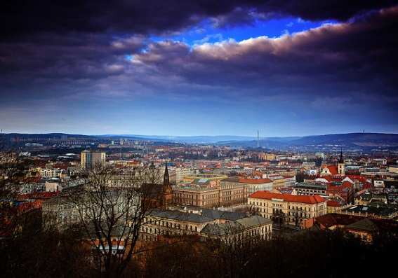

Город Воронеж имеет город-побратим Брно, который находится в Чехии. У нас в городе есть гостиница «Брно», улица Южно – Моравская в Советском районе и даже когда-то был магазин «Морава».
Побратимское движение берет свое начало в XX веке, в 1942 году, когда жители английского города Ковентри, пострадавшего от бомбежек германской авиации, направили телеграмму жителям героического Сталинграда, в которой было выражено восхищение их мужеством и сделано предложение установить дружеские отношения.
Идею развития побратимского движения продолжил в 50-е годы XX века президент США Эйзенхауэр. По его инициативе в правительстве США были введены должности по развитию международных связей со странами Западной Европы. Процесс породнения советских и зарубежных городов, начатый в СССР в 60-80-е годы, был продолжен Россией в 90-е годы.
А что такое города-побратимы? Города-побратимы – это два города, расположенные в разных странах, между которыми установлены дружественные связи для взаимного обмена и дружбы.
")
Вторым побратимом нашего города в 1989 году стал Земельный округ Везермарш (ФРГ). С тех пор ежегодно происходит обмен делегациями учащихся школ и учителей, организуются поездки творческих коллективов и спортивные соревнования. В библиотеку Воронежского государственного университета было передано 7 тысяч томов учебной и художественной литературы.
В 1991 году Воронеж заключил договор о побратимских отношениях с городом Шарлотт (Северная Каролина, США). Сотрудничество развивалось, главным образом, по пути обмена специалистами. По грантам государственного департамента США в вузах города Шарлотт и различных государственных и коммерческих организациях прошли обучение и стажировку около 50 специалистов и студентов из Воронежа.
В 1992 году у города Воронежа появился побратим в Китайской Народной Республике — город Чунцин, один из четырех городов Центрального подчинения в КНР.
На территории городского округа Чунцин проживает 30 миллионов жителей. Китайская сторона проявляет большой интерес к сотрудничеству с Воронежем в сфере экономики и производства.
") Пятым городом-побратимом стал город Сливен (Болгария) в 1995 году. С тех пор происходит регулярный обмен официальными и деловыми делегациями. Детские танцевальные коллективы из Воронежа ежегодно принимают участие в Международном сливенском фестивале, посвященном Дню славянской письменности. При содействии администрации города Сливен воронежские туристические фирмы установили деловые отношения со своими болгарскими партнерами, и ежегодно в Болгарию выезжают отдыхать до тысячи туристов из Воронежа.
Пятым городом-побратимом стал город Сливен (Болгария) в 1995 году. С тех пор происходит регулярный обмен официальными и деловыми делегациями. Детские танцевальные коллективы из Воронежа ежегодно принимают участие в Международном сливенском фестивале, посвященном Дню славянской письменности. При содействии администрации города Сливен воронежские туристические фирмы установили деловые отношения со своими болгарскими партнерами, и ежегодно в Болгарию выезжают отдыхать до тысячи туристов из Воронежа.
И, наконец, шестым городом-побратимом стал в 1996 году испанский город Леон. Вузы ежегодно обмениваются преподавателями и студентами, работают над совместными научными проектами. Испанцы проявляют искренний интерес к русской литературе и искусству. Воронежские коллективы «Православная Русь», «Голоса России» и «Ровесник» при содействии администрации города Леон каждый год выезжают в Испанию на гастроли и фестивали. Несколько раз выставляли свои произведения в Леоне воронежские художники.
© Шаталов Арсений,
МБУДО ЦДО "Реальная Школа",
МБОУ СОШ №57